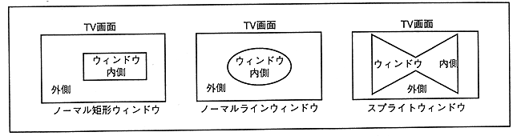
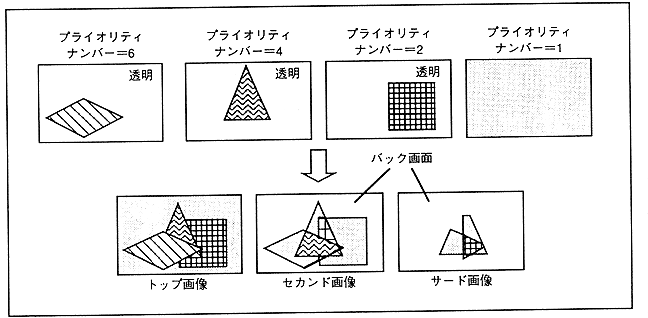

Figure 3.20 Priority function

Priority numbers corresponding to each scroll screen can be changed in character units or dot units. By using this function and changing the priority of only a certain part of the scroll screen, you can make one scroll screen appear to have multiple screens.